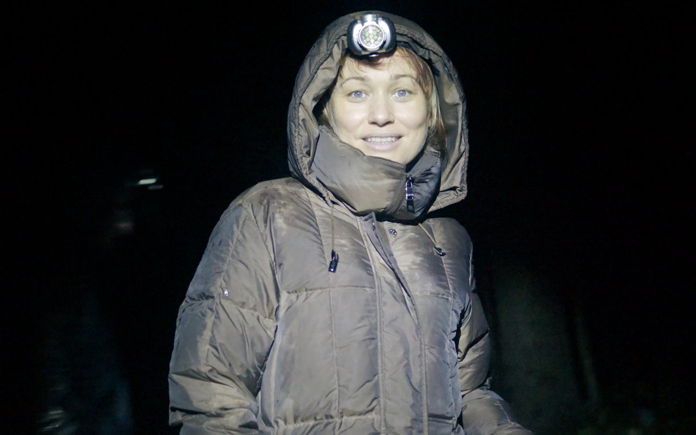

Ольга Редько не понаслышке знает, что такое «покорять большие города». Когда-то она уже переезжала из Юрги в Кемерово.
Здесь Ольга служила в местном театре, уйдя из театра, бодрила кемеровчан в утреннем эфире радиостанции Серебряный дождь Кемерово и почти 10 лет учила студентов университета культуры Актерскому мастерству и Сценической речи.
Большую роль Ольга сыграла и в становлении благотворительного фонда «Счастье детям». Принимала участие во многих мероприятиях фонда, читала детям сказки, помогала (и помогает до сих пор) собирать деньги.
Однажды Ольга, наверное, решила, что Кемерово её вряд ли чем-то может удивить и купила билет в Москву в один конец.
Ох, у меня очень нетипичная ситуация. Меня поддерживает мой очень родной человек.
Решение переехать было спонтанным или ты к этому шла целенаправленно?
Я даже не знаю, как на это ответить. Я много лет сопротивлялась. Возможностей и поводов уехать было много. И очень часто меня спрашивали — зрители, друзья — что ты здесь делаешь? почему ты здесь? «Почему ты не в Москве?» — первая реакция тех, кто бывал на моих спектаклях, проектах. Но я каждый раз придумывала причины, почему я не хочу/не могу уехать, я искренне считала, что можно и нужно делать хорошее/доброе/вечное и в Кемерове.
Сейчас я думаю, что все эти поводы и возможности приходили не просто так. Не сознательно, но, наверное, я всё же готовилась, понимала, что рано или поздно мне жизненно необходимо будет другое место для применения себя. Выше, быстрее, сильнее.

Хотя, и решение об уходе, и решение об отъезде были спонтанными. «Кто здесь?» — спрашивала я сама себя после того, как произносила «я ухожу» :) Ну и плохую шутку сыграло со мной то, что, не помышляя об отъезде, я не собирала должным образом архив/портфолио. Делайте это с самого начала, даже если не думаете о такой резкой перемене всей жизни — пригодится.
Почему именно Москва?
Здесь сын. По-настоящему родные люди у меня в двух городах в России, поэтому выбор был между Юргой и Москвой.

С момента принятия решения до переезда — примерно полтора месяца — меня не покидал страх. Иррациональный страх обо всем — что не получится, что я не справлюсь с элементарными организационными вопросами, что жизнь станет хуже, в конце концов, что всё это зря затеяла. Страх всепоглощающий, не позволяющий спать, есть. И он не проходит с отрывом шасси от взлетной полосы. Нужно быть готовым к этому. Я не была.
Нужно было за шесть недель довести два курса студентов, закончить дела на радио, найти жильцов в квартиру, освободить её от хлама. Внутренне принять это. Организовать перевозку автомобиля и меня. Внутренне принять это. Поговорить хоть немного с каждым, кто тебе дорог. Внутренне принять это. Страх — главное слово тех шести недель. И никто его с тобой не разделит, если ты уезжаешь один.
Как дела с работой?
Плохо. Я понимала, что будет непросто, особенно, в моей профессии. Но, что настолько плохо, я не думала) Я не была готова, правда. Сейчас мне многие знакомые говорят «ты, наверное, была уверена, что ты такая классная? а я тебе говорил(а)». Да, ребят, вы правы, я самонадеянно верила, что при том количестве усилий, которые я прилагаю, всё пойдёт быстрее… Но вот недели три назад я обедала с проректором Щукинского училища, и Алексей сказал мне: «Слушай, ну ты молодец, сучишь лапками. Значит, выплывешь». Вот и я снова самонадеянно думаю - выплыву.
Как с жильём, сколько стоит аренда/покупка?
Сейчас (в кризис) предложений жилья масса. Моя стоит 35000 р/месяц, живу в Павшинской пойме - это самая окраина Москвы на северо-западе. Однокомнатная квартира в только что построенном доме. Район роскошный. Уточки плавают под окном, яхт-клуб, вертолетная площадка, метро в шаговой доступности… Покупка, конечно, пока для меня мечта.
А серьёзно, как дела с работой в Москве?
Серьёзно, полная жопа)) В моей профессии. Съемки заморожены, театры останавливают даже ранее начатые проекты, на радио сокращения.
Но в другой сфере работу можно найти всегда - пусть не то, что ты хотел, и не за те, что ты хотел, деньги, но можно.
Мне, например, помог мой преподавательский опыт. Первую работу я нашла именно в этой сфере, сейчас преподаю в московском филиале Санкт-Петербургской школы телевидения. Студенты мои - люди совершенно разных профессий, совершенно различные по возрасту, по социальному положению. Те, кому необходимо прокачать навыки коммуникаций, кто чувствует потребность в некотором раскрепощении. Достаточно свободный график позволяет продолжать поиски.
Как изменились доходы/расходы?
Ох, у меня очень нетипичная ситуация. Меня поддерживает мой очень родной человек. У нас не получилось сохранить семью, теперь я понимаю, что по большей части в этом моя вина, но удалось остаться даже не просто родителями нашего сына, а друзьями. Сейчас так мало по-настоящему мужских поступков, а мне очень повезло — когда было совсем невмоготу, когда на полном серьезе думала о том, что жить, в общем-то, и не для чего, Сергей помог, буквально вытащил меня. Во всех смыслах - и из города, и из… остального)) Именно он мой основной доход сейчас. Ну и небольшие пока по московским меркам деньги за преподавание. Надеюсь, когда-нибудь я смогу сделать для него что-нибудь настолько же важное.
Тем, кто, возможно, думает о переезде, скажу — у вас должен быть задел на полгода. Или накопления, или человек, который поддержит вас. Какой-то источник, который позволит не сломаться через месяц, не отчаяться. Именно поэтому многие сдаются, у меня же есть возможность по этому поводу переживать несильно. Ну и очень много людей меня поддерживают тем, что безоговорочно верят в меня.
— Как твои дела, Оля? — Дела — ужас, но я решила пока не отчаиваться. — Давай договоримся, что ты не будешь отчаиваться до 2016-го.
Что изменилось в жизни вообще?
Всё. Всё нужно начинать сначала — привыкать водить совсем в других условиях, и иногда очень уставать просто за рулем. Привыкать к паре-тройке часов в день под землей.
Искать мастеров по маникюру/педикюру/окрашиванию, так и не найти, страдать от уродских рук, каких никогда не было (а на кастингах, между прочим, отдельно снимают руки). Вплоть до того, что привыкать к совершенно другой воде — более жесткой — и, как следствие, выпадению волос, шелушащейся коже. Ужас, короче)
Заново создавать круг общения.
И самое главное, быть готовым к тому, что ты, вся такая успешная, добившаяся определенного авторитета, оказываешься в позиции новичка, просителя и т.п.
В общем, сплошной выход из зоны комфорта. Всё, как я люблю)
Что отличает Москву от Кемерова больше всего?
Для начала бытовые условия — чистые, ухоженные дворы, дороги, улыбающаяся консьержка. Дет.сады, школы без очередей. Ещё сегодня вспомнила, что ни разу за лето не мыла машину. Оно, конечно, ещё потому, что дожди всё время)) Но в Кемерово, наоборот, её нужно было бы мыть после каждого дождя. Просто улицы здесь ежедневно моют.
Но главное — возможности, реальные возможности. Не просто какая-то эмоциональная накрутка. Приведу пример. Мне нужна операция, очень серьёзная и, как следствие, недешевая. В Кемерове мне вообще отказывались её делать, мол, опасно. Здесь стало понятно, что уже никак. Поехала в Сеченова, готовая платить, просить… Мне не просто она показана, сказал зав.отделением (он же профессор, он же зав.кафедрой и т.п.), мне положена министерская квота. Сказать, что я была в шоке, ничего не сказать. Кто бы в Кемерове сказал простой тётке с улицы, что она может бесплатно, да просто должна! сделать сложнейшую микрохирургическую операцию?
Ну и для наглядности приведу два реальных диалога в двух городах:
— Кризис, да. Машину продали, ищу третью работу - ипотека ж…
— Кризис, да. С работой вообще тухляк. Поеду пока в Черногорию... Тут собрался и сорвался в Нью-Йорк... Если что, похожу пока на курсы, поучусь на кого-нибудь...
Что было сложнее всего оставлять в Кемерово?
Людей.
Планируешь ли переезжать ещё куда-то в ближайшие лет 5?
Не планирую, но не зарекаюсь. Вообще, ощущаю себя сейчас значительно свободнее, чем, например, в юности. Запросто могу сорваться и уехать.